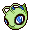
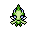
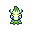

Pokédex / #251

Celebi #251
PsychicGrass
When CELEBI disappears deep in a forest, it is said to leave behind an egg it brought from the future.
Generation 2 · Johto

Stats
| Attack | 100 | |
|---|---|---|
| Defense | 100 | |
| Sp. Atk | 100 | |
| Sp. Def | 100 |
In the wild
| Wild level | 100–100 |
|---|---|
| HP | 100 |
| Experience | 15 |
| Egg groups | – |
Evolution
- Does not evolve.
Moves
| Level | Move | Type | Category | Power | Energy | Cooldown | Effect | |
|---|---|---|---|---|---|---|---|---|
| 1 | Tackle | Normal | Physical | 15 | 15 | 1s | Tackle is one of the most common and basic moves a Pokemon learns. It deals damage with no additional effects. | |
| 5 | Leech Seed | Grass | Status | 5 | 65 | 20s | Leech Seed plants a seed on the target. At the end of each turn that the target is under the effect of Leech Seed, the target's HP will be drained, and the same amount of HP will be restored to the target's opponent. Leech Seed will not work against Grass-type Pokemon. | |
| 10 | Confusion | Psychic | Special | 50 | 60 | 12s | Confusion deals damage and has a 10% chance of confusing the target. | |
| 15 | Recover | Normal | Status | – | 90 | 120s | User recovers 50% of its max HP. | |
| 20 | Magical Leaf | Grass | Special | 60 | 60 | 9s | Magical Leaf deals damage and ignores changes to the Accuracy and Evasion stats. | |
| 25 | Ancient Power | Rock | Special | 60 | 70 | 14s | Ancient Power inflicts damage and has a 10% chance of raising all of the user's stats by one stage. | |
| 30 | Zen Headbutt | Psychic | Physical | 80 | 80 | 15s | Zen Headbutt deals damage and has a 20% chance of causing the target to flinch. | |
| 35 | Uproar | Normal | Special | 90 | 100 | 25s | The user attacks in an uproar for three turns. During that time, no Pokemon can fall asleep. | |
| 40 | Giga Drain | Grass | Special | 75 | 95 | 12s | Giga Drain deals damage and the user will recover 50% of the HP drained. | |
| 45 | Earth Power | Ground | Special | 9 | 100 | 21s | Earth Power deals damage and has a 10% chance of lowering the target's Special Defense by one stage. | |
| 50 | Future Sight | Psychic | Special | 120 | 120 | 15s | Future Sight deals damage, but does not hit until two turns after the move is selected. | |
| 55 | Safeguard | Normal | Status | – | 100 | 90s | The user's party is protected from status conditions. | |
| 60 | Leaf Storm | Grass | Special | 13 | 140 | 32s | Leaf Storm deals damage but lowers the user's Special Attack by two stages after attacking. | |
| 65 | Healing Wish | Psychic | Status | 250 | 150 | 90s | The user become with 1 HP and all party members recover full HP. | |
| 70 | Last Resort | Normal | Physical | 140 | 140 | 30s | Last Resort does damage and has no secondary effect. |
Field abilities
FindFlashCut
Special abilities
Natural Cure
Egg moves
None
Technical machines
Aerial AceBideCalm MindDefense CurlDouble EdgeDouble TeamDream EaterEnergy BallGiga DrainHyper BeamLight ScreenMimicMud SlapNightmarePsychicRageRain DanceReflectRestSafeguardSandstormShadow BallShock WaveSolar BeamSubstituteSwiftSwords DanceThunder WaveToxicWater Pulse
Drops
| Item | Amount | Chance | |
|---|---|---|---|
| Mind Plate | 1–5 | 100% | |
| Meadow Plate | 1–5 | 100% | |
 | celebi doll | 1 | 0.1% |